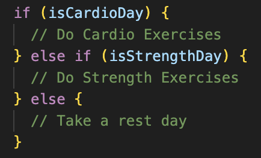
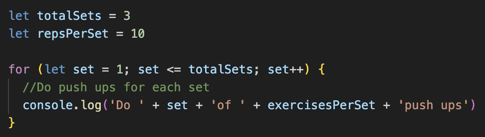

First, let's understand JavaScript on its own. Have you ever been on a website and a feature changes colour when you click on it or hover over it? That would be JavaScript (JS). In this blog post, we're going to explore JS in simple terms and learn a little more about it! Let's get into the fundamentals!
Simply put, JavaScript (JS) is a programming language that adds interactivity to your code, and therefore the final product. You can picture it creating reactions on your website. For example, if you added a button, JS would make something happen when you click it.
Now, if we're going to put JS, CSS and HTML together, how would it look? Let's put together an analogy of the human body.
Let's use a workout analogy for this one. Think of control flow as the decision-making process for planning your workout routine for the day. Before you start, you'd decide if it's cardio day, strength day or a rest day. So in JS, a control flow involves making decisions based on conditions.
The image above is telling us that if it's cardio day, we'll do cardio. If it's a strength day, we'll do strength. If it's a rest day, we'll take a rest. Simple so far?
Now we look at loops. Let's imagine doing a certain number of repetitions of our exercise for a certain amount of sets. That's a loop. In JS, loops are repeating set of instructions.
The image above is showing us what it's going to repeat 10 push-ups, for 3 sets.
In summary, control flow is like deciding the type of exercise you're going to do for the day. Loops are like repeating the specific exercise for a certain number of sets. Together they help structure and repeat actions in your workout routine, just like they would in your code.
The DOM stands for Document Object Model.
Imagine the DOM is your local gym. Each HTML element in your DOM is a different piece of exercise equipment in your gym. JavaScript Is your Personal Trainer guiding you through your workout routine in order to interact with these machines.
In a simple workout routine you would perform different exercises on different machines to target separate muscles. Similarly, JS interacts with different elements in the DOM to achieve specific tasks.
We can see here that by accessing the data in the toolbox, we're able to find out more information about our objects.
We can see that by accessing the data in the array, we're able to see a specific piece of information about the items in the array.
Functions are reusable building blocks of the code that perform specific tasks. You can define a set of instructions, give that set of instructions a name and then call that set of instructions in order to 'active' the function. Functions help to organise code.
If we stick to our fitness analogies from before, we can look at it this way:
Just as you would define a function in JS, you would outline your workout routine. Then we'd give each exercise a name. When your PT wants you to perform the exercise, they will call out the name of the exercise. When you want a particular set of instructions to run in your code, you call the function by name.